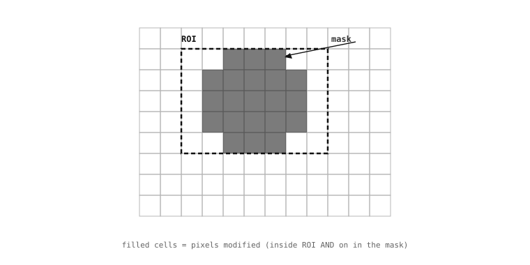

5.5. Vùng quan tâm và mặt nạ¶
Theo mặc định, mọi thao tác trong module image đều tác động lên toàn bộ điểm ảnh của ảnh nguồn. Đây là hành vi đơn giản nhất để mô tả, và cũng là hành vi đúng khi thuật toán thực sự cần xử lý toàn bộ khung hình -- chẳng hạn chỉnh màu đồng đều, biểu đồ tần suất toàn cục, hay quá trình mã hóa để truyền dữ liệu. Nhưng trong thực tế, hầu hết các thuật toán chỉ muốn xem xét một phần nhỏ hơn. Một bộ theo dõi vùng màu (blob) quan sát một điểm đánh dấu màu chỉ quan tâm đến phần cảnh mà điểm đánh dấu có thể xuất hiện, không phải bức tường phía sau. Một lần dọn dẹp hình thái học chỉ an toàn khi áp dụng trên các điểm ảnh mà giai đoạn trước đã đánh dấu là ứng viên. Bộ phát hiện khuôn mặt có thể chỉ chạy bên trong hộp giới hạn mà bộ phát hiện thô hơn đã thu hẹp. Module image hỗ trợ công việc đó thông qua hai cơ chế giới hạn thao tác vào một tập hợp con điểm ảnh: vùng quan tâm hình chữ nhật và mặt nạ nhị phân. Chúng kết hợp tự do, và hầu hết mọi phương thức tác động lên điểm ảnh đều nhận một trong hai -- hoặc cả hai -- dưới dạng tham số từ khóa.
5.5.1. Vùng quan tâm (ROI)¶
Vùng quan tâm là một hình chữ nhật điểm ảnh được xác định bằng bộ bốn giá trị (x, y, w, h) được giới thiệu trên trang tọa độ. Khoảng ba mươi phương thức trên giao diện chấp nhận tham số từ khóa roi; khi có mặt, thao tác chỉ chạy trên các điểm ảnh bên trong hình chữ nhật đó và để nguyên phần còn lại của ảnh. Khi roi là None hoặc bị bỏ qua, thao tác chạy trên toàn bộ ảnh -- giống như khi truyền roi=(0, 0, width, height).
Trong code, từ khóa được đặt cùng với các tham số khác mà thao tác yêu cầu:
# Compute a histogram over a centred crop of the image.
h = img.get_histogram(roi=(64, 64, 128, 128))
Điều đầu tiên ROI mang lại là kiểm soát kết quả dương tính giả. Bộ theo dõi màu sắc chỉ nhìn vào mặt bàn sẽ không bao giờ kích hoạt khi chiếc áo đi ngang qua; bộ phát hiện cạnh chỉ chạy bên trong vùng làm việc đã xác định sẽ không bao giờ báo cáo các cạnh của chính giá đỡ camera. Việc thu hẹp diện tích tìm kiếm xuống phần cảnh mà thuật toán thực sự quan tâm là cải tiến rẻ nhất mà một pipeline có thể thực hiện để nâng cao độ tin cậy của chính nó.
Điều thứ hai mà chúng mang lại là pipeline từ thô đến tinh. Các đối tượng kết quả phát hiện -- blob, rect, apriltag, v.v. -- hiển thị hộp giới hạn của chúng dưới dạng bộ bốn giá trị (x, y, w, h) mà roi chấp nhận. Vì vậy giai đoạn thô đầu tiên có thể trả về hộp giới hạn, hộp đó được đưa trực tiếp vào roi của giai đoạn tiếp theo, và giai đoạn thứ hai chạy trên vùng hẹp hơn. Mỗi lần thu hẹp tiếp theo vừa tăng tốc giai đoạn tiếp theo vừa làm cho kết quả đáng tin cậy hơn, vì không gian tìm kiếm đã được lọc.
5.5.2. Mặt nạ nhị phân¶
Hình chữ nhật là dạng phù hợp khi vùng quan tâm căn chỉnh theo trục. Khi không như vậy -- một vùng cong, một vùng không lồi, các điểm ảnh mà giai đoạn trước đã phân loại là "khớp" -- thao tác phải được yêu cầu giới hạn bản thân vào một mẫu điểm ảnh tùy ý. Cơ chế cho điều đó là mặt nạ nhị phân: một Image riêng biệt, cùng kích thước với nguồn, được dùng làm công tắc bật/tắt theo từng điểm ảnh. Điểm ảnh khác không trong mặt nạ có nghĩa là "bao gồm điểm ảnh nguồn tương ứng"; điểm ảnh bằng không có nghĩa là "để nguyên điểm ảnh nguồn".
Mặt nạ thường là ảnh BINARY -- định dạng một bit mỗi điểm ảnh tồn tại chính xác cho mục đích này -- nhưng bất kỳ ảnh đơn kênh nào cũng hoạt động, vì bên tiêu dùng coi bất kỳ giá trị khác không nào là bật.
Các phương thức lọc, ngưỡng, và số học chấp nhận tham số từ khóa mask. Dạng giống nhau trên mỗi phương thức: một ảnh nhị phân được cấp phát riêng, cùng kích thước với nguồn, được truyền qua.
ROI và mặt nạ kết hợp với nhau. Truyền cả hai, và thao tác chỉ chạy trên các điểm ảnh nằm bên trong ROI và được bật trong mặt nạ. Hai cơ chế cung cấp cho code ứng dụng các đòn bẩy độc lập -- một cho vùng quan tâm hình chữ nhật, một cho mẫu tùy ý bên trong nó -- mà không làm cho dạng này thừa kế ràng buộc từ dạng kia.

Một ROI giới hạn thao tác vào một hình chữ nhật căn chỉnh theo trục. Mặt nạ thu hẹp thêm xuống một mẫu điểm ảnh tùy ý. Hai cái kết hợp với nhau: chỉ các điểm ảnh bên trong ROI và được bật trong mặt nạ mới bị sửa đổi.¶
5.5.3. Xây dựng mặt nạ¶
Ba phương thức Image xây dựng các hình học mặt nạ phổ biến tại chỗ bằng cách đặt về không các điểm ảnh bên ngoài vùng đã chọn:
mask_rectangle()giữ lại một hình chữ nhật.mask_circle()giữ lại một hình tròn.mask_ellipse()giữ lại một hình elip.
Mỗi phương thức nhận (x, y, w, h) (cho hình chữ nhật và hình elip) hoặc (x, y, radius) (cho hình tròn). Gọi bất kỳ phương thức nào trong số đó mà không có tham số sẽ căn giữa hình học và định cỡ để lấp đầy ảnh, đây là dạng mà ứng dụng dùng khi mục tiêu là hình oval hoặc hình tròn đơn giản trên toàn ảnh không ẩn gì ngoài các góc.
mask = image.Image(img.width(), img.height(), image.BINARY)
mask.clear() # start from all zeros
mask.mask_ellipse() # centred, full-size oval
Các mặt nạ thú vị hiếm khi chỉ đến từ các phương thức mask_*. Chúng đến từ các giai đoạn trước của pipeline: một lần ngưỡng tạo ra một ảnh nhị phân có các điểm ảnh khác không đánh dấu các khớp, đây chính xác là dạng để đưa vào tham số mask= của giai đoạn tiếp theo. Một lần dọn dẹp hình thái học tinh chỉnh mặt nạ đó mà không thay đổi dạng của nó. Bất kỳ thứ gì kết thúc dưới dạng ảnh đơn kênh đều là một mặt nạ hợp lệ.
5.5.4. Cách các thao tác sửa đổi ảnh¶
Một mẫu xuất hiện trong mọi đoạn code trên một vài trang vừa qua -- thao tác trả về cùng img để nối chuỗi -- đáng được trình bày rõ ràng để không phải nhắc lại mỗi khi giới thiệu một phương thức mới. Ba họ phương thức xuất hiện trên giao diện Image, mỗi họ xử lý ảnh nguồn theo cách khác nhau:
Các phương thức thao tác sửa đổi điểm ảnh của nguồn tại chỗ và trả về cùng ảnh để nối chuỗi. Các họ vẽ, số học, ngưỡng, và bộ lọc đều hoạt động theo cách này.
img.gaussian(1)làm mờimgvà trả về cùngimg; gán lại --img = img.gaussian(1)-- vô hại nhưng không cần thiết.Các phương thức chuyển đổi hoạt động tại chỗ theo mặc định giống như các phương thức thao tác, nhưng chúng chấp nhận
copy=Truevàcopy_to_fb=Trueđể cấp phát một ảnh kết quả riêng khi cần bảo tồn nguồn. Các chuyển đổi định dạng và các bản sao hình học là các thành viên chính của họ này.Các phương thức kiểm tra đọc các điểm ảnh và trả về một đối tượng kết quả -- danh sách các đặc trưng được phát hiện, biểu đồ tần suất, một tập hợp thống kê -- mà không sửa đổi ảnh nguồn chút nào.
Sự phân chia ba chiều đó nhất quán trên toàn bộ giao diện. Biết phương thức thuộc họ nào cho biết ứng dụng biết điều gì cần mong đợi từ một lần gọi: liệu các điểm ảnh của nguồn có còn nguyên vẹn hay không, liệu một ảnh kết quả riêng có được cấp phát hay không, và liệu giá trị trả về là bản thân nguồn hay thứ gì khác.